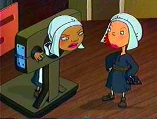
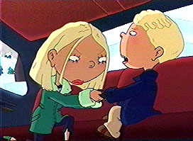
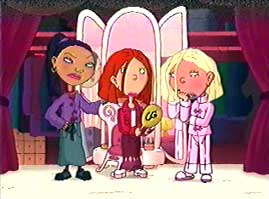
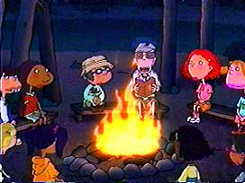
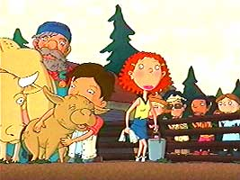
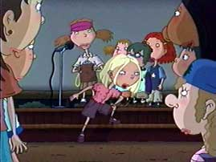

|

|
Episode Thirteen:
I SPY A WITCH
Written by Eryk Casemiro
Directed by Frank Marino
When Ginger is accused of defacing a statue at her school as a Halloween prank, she is dropped as the lead in the school musical.
But will the ghost of Maude reveal who is truly guilty of the crime?
Features original musical numbers such as "Salem Barbecue".
|
|

|
Episode Fourteen:
BLIZZARD CONDITIONS
Written by Eryk Casemiro
Directed by Ron Noble
A blizzard hits and the gang gets a day off from school.
Carl and Hoodsey look after a dog named Muffin, while Ginger, Dodie and Macie try to write a report on survival.
Meanwhile, Blake and Courtney get trapped in a car with their chauffer.
When everyone ends up at Ginger's house with no power and no food, will they all make it out in one piece?
|
|

|
Episode Fifteen:
DEJA WHO?
Story by Emily Kapnek and Shelia M. Anthony
Teleplay by Shelia M. Anthony
Directed by Dean Criswell
When Senator Ricci's son Michael decides to look at Lucky Junior High as a public school he might transfer to, Courtney wants to be his peer counselor to get close to what she considers "royalty".
But when she has an allergic reaction to cafeteria mystery meat and is bedridden, she has Ginger pretend to be her.
But when Ginger starts becoming Courtney too well and ignoring Macie and Dodie, will she turn into someone else for good?
Meanwhile, Hoodsey hits his head and gets amnesia.
|
|

|
Episode Eighteen:
SUMMER OF CAMP CAPRICE
Story by Emily Kapnek
Teleplay by Sheila M. Anthony and Emily Kapnek
Directed by Mark Risley
Courtney decides to go to Camp Caprice for the smmer along with Ginger and her friends.
Will the spoiled rich girl get used to roughing it or ruin Ginger's chances with a boy named Sasha she meets there?
Meanwhile, Carl plots to stay home during the summer to catch a dog thief by starting a vampire cleaning service while Darren and Miranda are sent to a military camp.
|
|

|
Episode Nineteen:
SUMMER OF CAMP CAPRICE
Part 2
Written by Emily Kapnek
Directed by Ron Noble
Carl and Hoodsey continue in their investigation to find the missing pets, Courtney deals with mosquitos and a nature hike while Darren and Miranda clean the barracks.
When Sasha overhears Courtney talking about Ginger going out with Ian Richardson back home, will she be able to convince him that she doesn't really have a boyfriend?
Plus: We get to hear Ginger sing!
|
|

|
Episode Twenty:
SUMMER OF CAMP CAPRICE
Part 3
Written by Emily Kapnek
Directed by Jared Faber
As the camp season winds to a close, Miranda and Darren get rescued by Ginger and her friends, Macie conquers her fear of swimming and Dodie learns that following the rules all the time might not be the best way to go.
Meanwhile, Ginger expresses her feelings to Sasha through song and Courtney finally gets camp spirit.
Back at home, Carl and Hoodsey set a trap for the dog-napper.
|